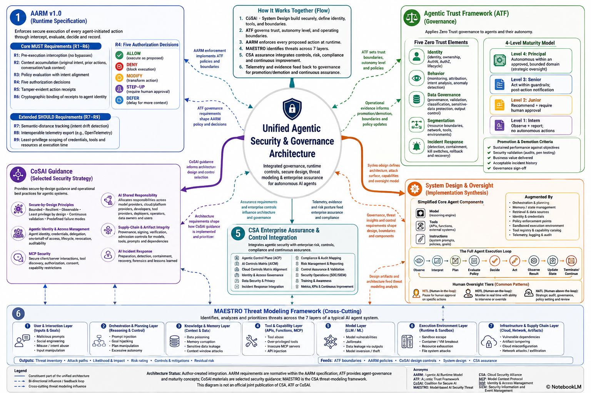

Architecture Intent
Model-Aware Architecture
The model is a capability inside a distributed system, not the whole system. Design identity, data flow, retrieval, orchestration, observability, and fallback around it.
Zero Trust AI Access
Prompts, retrieved context, embeddings, memory, tool calls, generated outputs, and logs are treated as protected assets. Apply continuous identity, device, location, risk, data-sensitivity, and action-context checks before model access, retrieval, memory use, or tool execution — using established Zero Trust and Conditional Access patterns from your identity provider (e.g., Microsoft Entra ID, Okta, AWS IAM Identity Center).
Trade-Off Driven
Every design choice should explain the selected option, the rejected option, and the cost, latency, quality, privacy, or operational impact accepted.
Least-Privilege Agent Authority
Agents should never inherit broad human or platform permissions. Tool access must be scoped, authorized, logged, and revoked when risk changes.
Grounded and Evaluated Outputs
Use retrieval, citations, validation, test sets, red-team scenarios, and human review where AI output must be trusted or acted upon.
Operational Resilience
Design the AI platform as an operations-grade system with capacity controls, cost governance, lifecycle management, model rollback, and measurable service health.
Threat-Informed Design
Map design controls to the NIST AI 100-2e2025 adversarial-ML taxonomy: high-level attack classes include evasion, poisoning, privacy, and—within GenAI—misuse. Test representative techniques and objectives such as prompt injection, backdoors, model extraction, and membership inference, aligned with MITRE ATLAS and OWASP Top 10 for LLM Applications 2025 (v2.0).
Graceful Degradation
When model, vector index, tool API, or guardrail services fail, the system should degrade safely rather than fail open or take uncontrolled action.
Incomplete Defense Acknowledgment
Prompt injection, particularly indirect injection via external content, has no known complete defense as of 2025. Defense-in-depth reduces risk but cannot eliminate it for high-assurance contexts requiring human approval gates.
AI Design Factors
Model & Data
Model & Inference
- Provider/model class, hosting, region, context window, latency, routing, fallback, throughput, and cost controls.
- Trade-off: quality and reasoning depth versus latency, cost, resilience, and data-handling restrictions.
Retrieval & Grounding
- RAG architecture, source ingestion, chunking, embeddings, ranking/reranking, graph relationships, citations, provenance, and freshness.
- Authorization must occur before protected content enters model context.
- Trade-off: grounded evidence versus retrieval latency, complexity, and leakage risk.
Memory & State
- Working, episodic, semantic, procedural, enterprise/shared, audit, workflow, and checkpoint state.
- Govern writes, provenance, retention, deletion, tenant isolation, integrity, and poisoning controls.
- Trade-off: continuity and personalization versus privacy and state-management risk.
RAG Architecture Strategy
| Architecture | Primary Pattern | Best Fit | Key Trade-Off |
|---|---|---|---|
| Hybrid RAG | Dense/vector + sparse/BM25 + rank fusion + reranking | Enterprise corpora with semantic and exact-match needs | Higher retrieval complexity and latency |
| Graph RAG | Entity/relationship traversal plus contextual retrieval | Multi-hop, relationship-heavy, cross-document questions | Graph construction, entity resolution, freshness, and graph authorization |
| Agentic RAG | Planner selects retrieval tools, grades evidence, and iterates | Complex multi-source or multi-step evidence gathering | More latency, tokens, tool calls, and control surface |
| Adaptive RAG | Router decides no retrieval, single retrieval, or multi-step retrieval | Mixed workloads where retrieval effort should match query complexity | Routing errors can cause under- or over-retrieval |
| Multimodal RAG | Retrieve page/image/audio/video representations, not only text chunks | PDFs, slides, scans, charts, tables, images, audio, and video | Modality-specific ingestion, indexing, evaluation, and security |
Agent Runtime
Agent Orchestration
- Topology, planner/workflow graph, state machine, handoffs, supervisor-worker coordination, parallel/sequential execution, retries, checkpoints, and completion control.
- Orchestration styles include graph/stateful workflow, role/team, workflow-first enterprise, handoff/delegation, hybrid agent+workflow, and tool-centric loops.
- Implementation examples: LangGraph, CrewAI, Microsoft Agent Framework, OpenAI Agents SDK, Google ADK, Claude Agent SDK, or equivalent/custom orchestration.
- Trade-off: flexibility and autonomy versus determinism, state complexity, observability, and control.
Decision Plane
- Bounded routing, classification, prioritization, tool/agent selection, and escalation.
- Mechanisms: deterministic rules, classifiers, structured LLM decisions, specialized decision models such as Jev/equivalent, hybrids, and human decisions.
- Decision output proposes what should happen; policy/authorization independently determines whether it may happen.
Tool & Action Surface
- Read-only, write, customer-facing, financial, privileged, cloud-admin, code-execution, browser/computer-use, and external side-effect actions.
- Model tool registry, schemas, scopes, action criticality, transaction boundaries, and completion evidence.
- Trade-off: operational leverage versus blast radius and misuse risk.
Runtime & Containment
- Sandboxing, network/egress boundaries, runtime credentials, resource quotas, loop/time/token budgets, kill switches, pause/resume, rollback/compensation, and quarantine.
- Containment must stop unsafe execution without depending on the compromised reasoning path.
Decision Plane Mechanisms
| Decision Mechanism | Best Fit | Control Boundary |
|---|---|---|
| Deterministic rules | Hard business rules, legal thresholds, entitlement and authorization policy | Authoritative where policy is explicit and testable |
| Classifier / specialized decision model (e.g., Jev or equivalent) | Bounded routing, severity classification, tool/agent selection, escalation | Confidence-gated; never substitutes for authorization |
| LLM structured decision | Complex semantic judgment when a bounded model is insufficient | Validate schema; apply fallback and human review by consequence |
| Human decision | High-impact, ambiguous, regulated, or low-confidence cases | Preserve approver identity, evidence, and audit trail |
Agentic Orchestration Implementation Mapping
| Architecture Style | Representative Implementations | Primary Design Concern | Security Focus |
|---|---|---|---|
| Graph / stateful workflow | LangGraph or equivalent | Explicit nodes, edges, durable state, interrupts, resume/retry | Checkpoint integrity, state ownership, transition authorization |
| Role / team-based multi-agent | CrewAI or equivalent | Specialized roles, managers, delegated tasks, shared context | Role identity, bounded delegation, shared-memory isolation |
| Workflow-first enterprise agent | Microsoft Agent Framework or equivalent | Workflow/graph orchestration, enterprise state and integration | Identity, middleware, policy gates, state/checkpoint protection |
| Agent SDK / handoffs / agents-as-tools | OpenAI Agents SDK or equivalent | Manager-to-specialist delegation and bounded handoffs | Context minimization, delegation scope, end-to-end provenance |
| Agent + workflow hybrid | Google ADK or equivalent | Composable agents and deterministic workflow control | Boundary clarity, state isolation, approval placement |
| Tool-centric agent loop | Claude Agent SDK or equivalent | Iterative context → tool → observe → verify loop | Tool allowlists, sandboxing, budgets, action authorization, containment |
Identity & Trust
Agent Identity & Delegation
- Unique workload identity, human/agent delegation chains, on-behalf-of context, capability attenuation, expiration, revocation, and attribution.
- Do not use shared human credentials as agent identity.
Authorization & Policy Enforcement
- Separate Policy Decision Point (PDP), Policy Information Point (PIP), Policy Enforcement Point (PEP), and resource-side enforcement where appropriate.
- Model proposals, decision-model outputs, human approvals, and protocol connectivity do not themselves grant authorization.
- Apply step-up, deny, modify, defer, least privilege, and action receipts for consequential actions.
Human Oversight
- HITL for decision participation/approval; HOTL for runtime supervision; human-over-the-loop for supervisory control across autonomous loops; HATL for governance/accountability.
- Prefer risk-adaptive oversight based on action criticality, reversibility, confidence, and operational scale.
MCP / A2A Trust Boundaries
- Model host/client/server/gateway and agent-to-agent boundaries explicitly.
- Authenticate peers, constrain capability discovery, preserve message/task provenance, validate schemas, and authorize every protected resource/action independently.
- Protocol connectivity is not business authorization.
Security & Operations
Secrets, Credentials & Cryptography
- Credential broker, short-lived tokens, secrets isolation, key management, encryption, workload-bound credentials, and rotation/revocation.
- Keep durable secrets out of prompts, memory, logs, and model-visible context.
Observability & Incident Response
- Correlated prompt/retrieval/model/decision/policy/tool traces, action receipts, anomaly detection, cost/loop telemetry, and SIEM integration.
- Design runbooks for kill switch, credential revocation, tool disablement, memory/index quarantine, and forensic reconstruction.
Evaluation & Adversarial Testing
- Golden tests, red-team scenarios, prompt/tool attacks, RAG quality, authorization-negative tests, regression testing, behavior drift, and release gates.
- Evaluate task success and independent completion evidence, not merely fluent outputs.
AI Supply Chain & CI/CD
- Model/artifact registry, dependency integrity, signed/promoted artifacts, build provenance, framework/SDK governance, scanning, rollback, and controlled deployment.
- Framework choice introduces supply-chain and version-drift risk that must be governed independently from architecture choice.
Governance & Assurance
Governance / Risk Traceability
- Trace business driver → requirement → security service → architecture component → control → implementation → test/evidence.
- Record accountable authority, responsible operators, exceptions, residual risk, and reassessment triggers.
Evidence & Assurance
- Preserve control evidence, policy/action receipts, approvals, test results, release decisions, incidents, and continuous-assurance telemetry.
- Evidence should demonstrate both control design and operating effectiveness.
AI Risk Governance
AI RMF Operating Functions
Use Govern, Map, Measure, and Manage as the lifecycle operating model for AI risk decisions, ownership, assessment, monitoring, and treatment.
Trustworthiness Characteristics
Design for valid and reliable behavior, safety, security and resilience, accountability and transparency, explainability and interpretability, privacy enhancement, and harmful-bias management.
NIST AI 600-1 GenAI Risk Taxonomy
Screen the design for generative-AI risks unique to, or exacerbated by, model generation, retrieval, tool use, agentic execution, and synthetic content creation. Twelve risk areas from the July 2024 Generative AI Profile.
EU AI Act Obligations
Classify the system under the EU AI Act risk tiers. Prohibited practices must be blocked at design time. High-risk AI systems require conformity assessment, technical documentation, human oversight, bias testing, accuracy and robustness standards, and registration in the EU database before market placement.
Risk-to-Control Traceability
Each high-risk AI behavior should trace to questionnaire evidence, design factor, security EPIC, pattern selection, trade-off rationale, test case, and monitoring signal.
Governance Evidence
Capture model card inputs, data lineage, prompt versions, retrieval source policy, evaluation results, red-team findings, approval decisions, incident records, and exception handling.
Decision Gates
Require explicit review before production release, model/provider change, new tool enablement, new sensitive data class, increased autonomy, or expanded user population.
Sector Regulations
Layer sector-specific frameworks — HIPAA, PCI DSS, SOX, GDPR, DORA (financial AI), MiFID II — over the AI-specific governance baseline. Requirements may restrict model hosting, data residency, explainability, and human oversight depth.
AI RMF Design Mapping
| Function | Design Meaning | Architecture Evidence | Control Outcome |
|---|---|---|---|
| Govern | Define policy, accountability, roles, risk tolerance, ownership, and escalation paths. | AI ownership model, acceptable-use policy, approval gates, exception register, risk appetite. | AI risk decisions are owned, reviewable, and enforceable. |
| Map | Understand use case, context, data, stakeholders, impact, threat surface, and deployment environment. | System context, data classification, users, tools, model providers, affected parties, impact analysis. | Architecture scope and risk boundaries are explicit before implementation. |
| Measure | Evaluate model behavior, retrieval quality, safety, privacy, resilience, and security control effectiveness. | Golden datasets, red-team tests, RAG metrics, hallucination tests, authorization tests, latency/cost tests. | AI quality and risk posture are measured rather than assumed. |
| Manage | Treat, monitor, respond to, and continuously improve AI risks across production lifecycle. | Runbooks, model rollback, guardrail tuning, issue tracking, incident response, continuous evaluation. | AI risks have active treatment, monitoring, and response mechanisms. |
NIST AI 600-1 Generative AI Risk Taxonomy
| Risk Area | Design Implication | Recommended Treatment |
|---|---|---|
| CBRN Information or Capabilities | Model may generate or assist with harmful specialized knowledge. | Risk classify use case, restrict prohibited content, add refusal policy, log and escalate attempts. |
| Confabulation | Generated outputs may be plausible but false or unsupported. | Use RAG grounding, citations, confidence signals, output validation, and human review for high-impact decisions. |
| Dangerous, Violent, or Hateful Content | System may produce harmful or abusive outputs. | Apply input/output safety filters, policy enforcement, abuse monitoring, and escalation workflows. |
| Data Privacy | Prompts, context, memory, embeddings, logs, and outputs may expose sensitive data. | Use minimization, redaction, encryption, retention limits, tenant isolation, and prompt/log governance. |
| Environmental Impacts | Large models and high-volume inference increase compute, energy, water, and carbon footprint — at infrastructure and societal scale. | Use model routing, caching, batching, smaller models where acceptable, and token-budget controls. Measure energy consumption and report lifecycle emissions where required by governance. |
| Harmful Bias and Homogenization | Harmful bias may produce discriminatory or disparate outcomes. Homogenization may reduce diversity of information, perspectives, models, or outputs and create systemic dependence on common model behavior or information sources. | Measure bias, define representative test sets, tune retrieval sources, and apply review for sensitive domains. |
| Human-AI Configuration | Users may over-trust, under-supervise, or misunderstand AI outputs and autonomy. | Use disclosure, confidence cues, review gates, appeal paths, and clear human responsibility boundaries. |
| Information Integrity | Generated content may pollute decision records, knowledge bases, or public information ecosystems. | Label AI output, preserve provenance, validate before publication, and protect authoritative records. |
| Information Security | Prompt injection, data exfiltration, tool misuse, model abuse, and supply-chain compromise may occur. | Use Zero Trust access controls, retrieval authorization, tool policy engines, sandboxing, secrets isolation, and AI incident runbooks. |
| Intellectual Property | Inputs or outputs may create copyright, license, training-data, or proprietary-content exposure. | Track sources, restrict protected data use, add attribution review, and evaluate output reuse policy. |
| Obscene, Degrading, or Abusive Content | System may generate offensive or degrading content even when not explicitly requested. | Use content policy controls, safety classification, red-team tests, and user-reporting workflows. |
| Value Chain and Component Integration | Model providers, plugins, data pipelines, vector stores, and tools introduce third-party and supply-chain risk. | Maintain component inventory, vendor risk review, model/provider allowlists, SBOM-style evidence, and change control. |
EU AI Act Risk Classification
| Risk Tier | Examples Relevant to LLM/GenAI Systems | Architecture Obligations |
|---|---|---|
| Prohibited | Social scoring by public authorities; real-time remote biometric ID in public spaces; subliminal manipulation systems; exploiting vulnerable groups. | Hard block at design time. No system may be built that enables these practices. No configuration option should allow it. |
| High Risk | AI in recruitment/HR decisions, credit scoring, educational assessment, critical infrastructure management, law enforcement, migration and border control, administration of justice. | Conformity assessment before market placement; technical documentation; human oversight controls; accuracy/robustness/cybersecurity standards; bias testing; logging sufficient for post-market monitoring; registration in EU AI Act database. |
| Limited Risk | Chatbots and virtual assistants; AI-generated content (deepfake text, audio, video); emotion recognition systems. | Transparency obligations: users must be informed they are interacting with AI. AI-generated content must be labeled. Maintain disclosure controls in the UI layer. |
| Minimal Risk | Spam filters; AI-enabled games; recommendation systems with no significant impact on rights. | No mandatory obligations, but voluntary code of practice recommended. |
| GPAI Models | Foundation models / general-purpose AI models (e.g., GPT-4, Claude, Gemini) used as components. | Model providers must maintain technical documentation and comply with copyright law. Systemic-risk GPAI models face additional adversarial testing, incident reporting, and cybersecurity obligations. Deployers must understand upstream provider obligations. |
Multi-Framework Mapping
| Framework | Primary Focus | Key Design Contributions | Relationship to Others |
|---|---|---|---|
| NIST AI RMF 1.0 | Governance and risk lifecycle | Govern/Map/Measure/Manage lifecycle; trustworthiness characteristics; risk ownership | Foundation governance layer; 600-1 extends for GenAI |
| NIST AI 600-1 | Generative AI–specific risks | 12 GenAI risk categories; design implications unique to foundation model systems | Supplements AI RMF for LLM/GenAI deployments |
| NIST AI 100-2e2025 | Adversarial ML attack vocabulary and taxonomy | Hierarchical AML taxonomy covering attacker goals, objectives, capabilities, lifecycle stages, and attack types. High-level classes include evasion, poisoning, and privacy for PredAI, with misuse additionally relevant to GenAI; representative techniques/objectives include prompt injection, backdoors, model extraction, and membership inference. | Vocabulary layer — standardises adversarial-ML terminology; use MITRE ATLAS for technique-level threat knowledge and OWASP for application-layer LLM risks and controls. |
| EU AI Act | Mandatory legal compliance (EU) | Risk tiers, prohibited practices, high-risk obligations, GPAI model rules | Legal layer; must be satisfied before AI RMF and 600-1 controls are designed |
| US Sector-Specific Compliance | Federal and state legal obligations (US) | No single comprehensive US federal AI law exists. Compliance is sector-specific: HIPAA (health AI), FCRA/ECOA/Fair Housing Act (credit and lending AI), FDA SaMD framework (medical device AI), SEC disclosure rules (investment AI), FTC Act (unfair/deceptive AI practices), DOJ ECCP (corporate AI compliance), state laws (CO AI Act, CA Transparency Act, NYC Local Law 144) | Legal layer for US-deployed systems; must be layered over AI RMF governance; state laws remain enforceable pending federal preemption resolution |
| MITRE ATLAS | Adversarial ML threat technique enumeration | Specific attack techniques: model extraction, poisoning, evasion, prompt injection, inversion — mapped to real-world incidents | Technique library; AI 100-2e2025 provides the vocabulary; ATLAS provides the specific technique instances; OWASP translates to application controls |
| OWASP Top 10 for LLM Applications 2025 (v2.0) | Application-layer LLM risks | Prompt injection, sensitive information disclosure, supply-chain risk, data/model poisoning, improper output handling, excessive agency, system prompt leakage, vector/embedding weaknesses, misinformation, and unbounded consumption. | Application-risk layer; complements NIST AI 100-2e2025 and MITRE ATLAS with developer-facing LLM risk categories and controls. |
| NIST CSF 2.0 (February 2024) | Enterprise cybersecurity lifecycle | Govern, Identify, Protect, Detect, Respond, and Recover functions. | Operational security backbone; AI-specific controls map onto CSF functions. |
SPA Framework and Standards Stack
| Layer | Framework / Standard | Scope | Binding? |
|---|---|---|---|
| Legal — EU | EU AI Act (Regulation 2024/1689) | Mandatory compliance for EU-deployed or EU-user systems; risk tiers, prohibited practices, high-risk AI obligations, GPAI rules | Mandatory (EU) |
| Legal — US | US Sector-Specific: HIPAA · FCRA · ECOA · Fair Housing Act · FDA SaMD · SEC AI Disclosure · FTC Act · DOJ ECCP · State AI Laws (CO, CA, NYC) | No single federal AI law; compliance is sector- and state-specific. All remain enforceable until federal preemption is resolved through legislation or litigation. | Mandatory where applicable (US) |
| Governance | NIST AI RMF 1.0 | Govern, Map, Measure, Manage lifecycle; trustworthiness characteristics; risk ownership and accountability | Voluntary (strongly recommended) |
| GenAI Risk Taxonomy | NIST AI 600-1 (July 2024) | 12 generative AI–specific risk areas; design implications and treatment guidance for LLM/GenAI systems | Voluntary |
| AML Attack Vocabulary | NIST AI 100-2e2025 | Hierarchical adversarial-ML taxonomy. High-level classes include evasion, poisoning, privacy, and—within GenAI—misuse; representative techniques/objectives include prompt injection, backdoors, extraction, and membership inference. | Voluntary |
| Threat Techniques | MITRE ATLAS | Specific adversarial ML attack techniques mapped to real-world incidents; technique-level threat modeling | Voluntary |
| Application Controls | OWASP Top 10 for LLM Applications 2025 (v2.0) | Application-layer LLM risks and developer controls, including System Prompt Leakage and Vector and Embedding Weaknesses. | Voluntary |
| Security Lifecycle | NIST CSF 2.0 (February 2024) | Enterprise cybersecurity Govern / Identify / Protect / Detect / Respond / Recover lifecycle; AI controls map onto CSF functions. | Voluntary |
US AI Compliance — Sector-Specific Obligations
| Sector / Law | AI Relevance | Architecture Obligations | Status |
|---|---|---|---|
| HIPAA | AI systems handling protected health information (PHI) — clinical decision support, patient communication, diagnostics | PHI minimisation in prompts and retrieval; encrypted audit logs; data residency; BAA with model providers; access controls on embeddings and memory | Federal — enforceable |
| FCRA / ECOA / Fair Housing Act | AI used in credit scoring, lending, insurance underwriting, or housing decisions | Explainability for adverse action; disparate impact testing; human review; audit trails; model documentation for regulators | Federal — enforceable |
| FDA Software as a Medical Device (SaMD) | AI/ML in medical devices, clinical decision tools, drug development | Pre-market approval or clearance; performance validation; post-market monitoring; change control for model updates | Federal — enforceable |
| FTC Act (Section 5) | Unfair, deceptive, or discriminatory AI practices in consumer-facing systems | Truthful AI capability claims; non-discriminatory outputs; user disclosure of AI involvement; data handling transparency | Federal — enforceable |
| SEC AI Disclosure Rules | AI use in investment decisions, portfolio management, financial advice, or material risk | Disclosure of AI use in filings; conflict-of-interest management; explainability for investment recommendations | Federal — enforceable |
| DOJ ECCP (AI Addendum, Sept 2024) | Corporate AI used in compliance functions — documentation, approvals, reporting | Assessment of criminal compliance risk from AI; controls on AI-generated data accuracy; prevention of AI-generated false approvals | Federal — enforceable |
| Colorado AI Act | High-risk AI decisions affecting consequential decisions (employment, credit, education, healthcare, housing) | Impact assessments; bias testing; user disclosure; appeal rights; effective date June 30, 2026 | State (CO) — effective June 2026 |
| California AI Transparency Act | AI-generated content disclosure for systems serving California users | Label AI-generated content; disclosure controls in UI layer; effective January 1, 2026 | State (CA) — effective Jan 2026 |
| NYC Local Law 144 | Automated employment decision tools used in NYC hiring or promotion | Annual bias audit by independent auditor; public disclosure of audit results; candidate notification | City (NYC) — enforceable |
| TAKE IT DOWN Act (2025) | AI-generated non-consensual intimate imagery (NCII / deepfakes) | Removal mechanisms for flagged content; content safety controls; federal criminal liability for non-compliance | Federal — enacted 2025 |
| OMB M-25-21 | US federal agency use of AI — governance, responsible adoption, public trust, and agency AI oversight | Apply current federal agency AI governance requirements, including designated AI leadership, use-case governance, risk management, and safeguards for high-impact uses. M-25-21 rescinded and replaced M-24-10. | Federal agency policy — current |
| OMB M-25-22 | US federal acquisition of AI capabilities and services | Apply acquisition governance, competition, vendor-risk, performance, data-rights, and lifecycle considerations when federal agencies procure AI. | Federal agency acquisition policy — current |
AI Design Questionnaire
Decision Plane & RAG Architecture Inputs
Agentic Security & Governance Inputs
Agentic Architecture & Human Oversight Inputs
Agentic Orchestration Framework Inputs v5b
Agent Runtime Harness & Execution Inputs v5
Generated Assessment
AI Pattern Playbook
| Pattern | Category | Core Idea | When to Use | Trade-Off | Security Consideration |
|---|
Distributed-System Concepts
| # | Concept | Category | Core Idea | AI Relevance | Trade-Off | Security |
|---|
Security EPICs
| EPIC | AI-Specific Scope | Required Controls | Design Trade-Off |
|---|---|---|---|
| Access Control | Users, service principals, model access, retrieval permissions, tool calls, agent roles, approval authority. | SSO/OIDC, RBAC/ABAC, workload identity, scoped tool credentials, just-in-time privileges, human approval gates — using established identity provider controls (Entra ID, Okta, AWS IAM), not custom-named frameworks. | Strong control reduces misuse but can increase friction and integration work. |
| Data Protection | Prompts, documents, embeddings, memory, vector indexes, generated outputs, traces, and audit logs. | Classification, minimization, redaction, encryption, key management, tenant isolation, retention and deletion policy. | Stronger protection can reduce context richness and personalization. |
| Network and Application Security | Model endpoints, retrieval services, APIs, tool connectors, sandboxed execution, and egress paths. | Private endpoints, API gateway, WAF, egress allowlists, SSRF protection, sandboxing, rate limits, circuit breakers. | Restrictive network paths improve safety but reduce provider and tool flexibility. |
| Adversarial ML Controls (NIST AI 100-2e2025) | High-level AML classes: evasion, poisoning, privacy, and GenAI misuse. Representative techniques/objectives include prompt injection, backdoors/trojans, model extraction, and membership inference across predictive and generative AI components. | Evasion: input validation and robustness testing. Poisoning: training/retrieval data governance and corpus-integrity checks. Privacy: extraction and membership-inference testing, output minimisation, access controls, and privacy-enhancing techniques. GenAI misuse: abuse monitoring and policy enforcement. Prompt injection/backdoors: defense-in-depth, provenance, tool isolation, and human approval for high-risk effects. Preserve the NIST hierarchy in test reporting rather than treating all techniques as peer-level classes. | Comprehensive AML controls add testing and operational complexity but are essential for systems exposed to adversarial users, fine-tuned models, external retrieval, or agentic tools. |
| Decision Integrity | Classifier, LLM, or specialized decision-model outputs that influence routing, risk classification, tool/agent selection, prioritization, or escalation. | Trusted input provenance, schema validation, confidence thresholds, calibration/adversarial testing, model/version pinning, deterministic policy enforcement, fallback paths, decision logging, and human escalation for low-confidence or high-impact cases. | More verification and fallback logic increases latency, but prevents probabilistic decisions from silently becoming authorization. |
| Multi-Agent Trust & Coordination | Agent-to-agent messages, delegation chains, shared tools/state, routers, aggregators, supervisors, peer networks, and human-control points. | Unique agent identity, mutual authentication, message provenance, bounded delegation, per-agent authorization, shared-resource isolation, loop/deadlock limits, synthesis verification, conflict escalation, and trust-domain segmentation. | Stronger coordination controls reduce emergent behavior and blast radius but increase orchestration, IAM, telemetry, and state-management complexity. |
| Agent Identity and Delegation | Dedicated agent identities, human delegation, on-behalf-of claims, multi-agent trust, lifecycle and revocation. | Unique workload identity, short-lived credentials, delegation-chain validation, identity-bound action receipts, revocation and offboarding. | Strong attribution and least privilege increase IAM and lifecycle complexity. |
| Runtime Action Control | Every proposed tool call or external action before execution. | AARM R1–R9 as applicable; ALLOW, DENY, MODIFY, STEP_UP, DEFER; tamper-evident receipts; runtime least privilege. | Per-action enforcement adds latency and policy-management overhead but constrains blast radius. |
| Agent Behavior and Drift | Goal drift, semantic drift, unexpected tool selection, looping and anomalous action sequences. | Behavior baselines, semantic-distance tracking, loop/time/token limits, anomaly detection, autonomy demotion and kill switches. | Stricter drift thresholds may interrupt valid novel behavior. |
| Memory and Context Integrity | Session memory, long-term memory, RAG context, shared workspace and agent state. | Memory-write authorization, provenance, tenant isolation, poisoning detection, retention/deletion, integrity checks and quarantine. | Integrity controls reduce personalization flexibility and add state-management overhead. |
| Multi-Agent and MCP Trust | Agent-to-agent messages, MCP clients/servers, third-party tools and delegated workflows. | Mutual authentication, capability manifests, message provenance, per-tool authorization, schema validation, trust-domain isolation and tool admission. | Protocol mediation improves control but adds integration friction. |
| Logging and Monitoring | Prompt, retrieval, model, tool, latency, cost, policy, and output traces. | Redacted audit logs, correlation IDs, model-call telemetry, anomaly detection, cost monitoring, security alerts. | High visibility improves response but creates sensitive telemetry requiring governance. |
| Incident Response | Prompt injection, data leakage, unsafe output, runaway agents, compromised tool credentials, cost spikes. | Kill switches, credential revocation, tool-disablement, memory/index quarantine, forensic traces, runbooks, tabletop tests. | Containment controls may interrupt service but reduce blast radius. |
Agentic Security & Governance

How the Architecture Fits Together
AARM — Runtime Enforcement
Intercepts every material agent action, evaluates intent and context, returns ALLOW, DENY, MODIFY, STEP_UP, or DEFER, and records attributable receipts.
ATF — Trust & Autonomy Governance
Defines identity, behavior, data, segmentation, incident-response boundaries, and the maximum autonomy level an agent may earn.
MAESTRO — Threat Modeling
Decomposes the agentic system across seven layers, identifies layer-specific and cross-layer threats, and prioritizes mitigations.
CoSAI — Secure Engineering
Provides secure-by-design practices, agentic IAM, MCP security, shared responsibility, incident response, and artifact-integrity guidance.
CSA — Enterprise Assurance
Maps threats and controls into CSA AICM v1.1 for AI-specific controls and CCM for cloud controls, plus audit evidence, risk management, security operations, compliance, and continuous assurance.
Framework Provenance and Status
| Framework / Artifact | Custodian / Steward | Status | Role in this SPA | Canonical Reference |
|---|---|---|---|---|
| Agentic Trust Framework (ATF) | Cloud Security Alliance (CSA) | Published agentic trust/governance framework | Autonomy levels, trust boundaries, promotion/demotion, and governance. | CSA ATF |
| Autonomous Action Runtime Management (AARM) v1.0 | AARM specification project | Published runtime action-control specification | Pre-execution interception, contextual authorization, decisions, receipts, telemetry, and least privilege. | AARM v1.0 |
| MAESTRO | Cloud Security Alliance (CSA) | Published agentic-AI threat-modeling approach | Seven-layer and cross-layer threat decomposition. | CSA MAESTRO |
| CoSAI | OASIS Open Project | Industry secure-AI collaboration | Secure engineering, agentic IAM, MCP security, supply chain, and shared-responsibility guidance. | OASIS CoSAI |
| AI Controls Matrix (AICM) v1.1 | Cloud Security Alliance (CSA) | Published AI controls matrix (June 2026) | AI-specific control and assurance mapping; distinct from the cloud-focused CCM. | CSA AICM v1.1 |
| Cloud Controls Matrix (CCM) | Cloud Security Alliance (CSA) | Published cloud control framework | Cloud security baseline supporting the AI control environment. | CSA CCM |
AARM v1.0 Requirements
| Requirement | Meaning | Conformance Use |
|---|---|---|
| R1 | Pre-execution interception of material agent actions. | Core |
| R2 | Context accumulation for the proposed action. | Core |
| R3 | Policy evaluation with intent alignment. | Core |
| R4 | Standardized authorization decisions such as ALLOW, DENY, MODIFY, STEP_UP, or DEFER. | Core |
| R5 | Tamper-evident action receipts. | Core |
| R6 | Binding the action and receipt to the initiating agent identity. | Core |
| R7 | Semantic-distance / drift tracking. | Extended |
| R8 | Interoperable telemetry export. | Extended |
| R9 | Runtime least-privilege enforcement. | Extended |
Agent Runtime Harness v5
| Harness Component | Purpose | Security / Reliability Requirement |
|---|---|---|
| Task & Goal Contract | Defines requested outcome, acceptance criteria, budgets, deadlines, and escalation conditions. | Bound scope; maximum steps, tool calls, time, and spend; explicit partial-success and failure policy. |
| Rules / Instructions | Persistent operating instructions, tool restrictions, behavioral policies, and completion rules. | Version, approve, protect integrity, separate trusted instructions from untrusted retrieved content, and support rollback. |
| Perception / Observation | Normalizes user input, APIs, events, documents, browser state, multimodal inputs, and tool results. | Schema validation, provenance, trust labeling, content safety, and malicious-input handling. |
| Reason / Plan Loop | Selects the next step, decomposes work, chooses tools or delegates, and maintains task state. | Explicit state, retry/loop budgets, policy-aware planning, and auditable action intent — not exposure of private chain-of-thought. |
| Memory | Maintains working, episodic, semantic, procedural, enterprise, or audit state. | Govern writes, isolate tenants/users, preserve provenance, detect poisoning, enforce retention/deletion, and control procedural-memory changes. |
| Tool / Action Layer | Executes APIs, MCP tools, code, browsers, databases, files, and external services. | Per-action authorization, least privilege, sandboxing, schema validation, idempotency, and AARM interception where material. |
| Completion Verifier | Determines whether the work actually satisfies the task rather than trusting the agent's completion claim. | Independent tests, policy/business-rule checks, evidence validation, deterministic acceptance criteria, or human approval. |
| Output | Returns the verified result and evidence to the user or downstream system. | Output validation, provenance/citations, safe rendering, audit evidence, and disclosure of partial or failed completion. |
Agent Execution Control Loop
Memory Taxonomy & Write Governance
| Memory Type | Purpose | Governance Focus |
|---|---|---|
| Working / Short-Term | Current conversation, task state, intermediate results. | Short TTL, task isolation, sensitive-context minimization. |
| Episodic | Prior tasks, events, outcomes, and experience. | Consent, provenance, user/tenant scope, retention and deletion. |
| Semantic | Facts, concepts, learned relationships, long-lived knowledge. | Source lineage, poisoning detection, freshness, authorization. |
| Procedural | Reusable workflows, learned procedures, behavioral playbooks. | Treat writes like behavior changes: review, test, approve, version, and roll back. |
| Enterprise Knowledge | Governed RAG corpus and authoritative business knowledge. | ACL-preserving retrieval, data classification, freshness, evidence. |
| Audit / Evidence | Immutable record of prompts, decisions, actions, approvals, and verification. | Tamper resistance, access control, retention, privacy minimization. |
Agent Operational KPIs
Effectiveness
Verified task success rate, rework rate, completion-verifier pass rate, and human escalation rate.
Efficiency
Cost per successful task, latency per task, tokens/model calls/tool calls per completed task.
Safety
Denied-action rate, policy violations, unsafe-tool attempts, approval-gate frequency, and containment events.
Reliability
Retry rate, loop-budget exhaustion, task-resume success, tool errors, and partial-completion rate.
Quality
Grounding/evidence quality, output acceptance rate, tool-call correctness, and domain-specific evaluation score.
Governance
Rule changes, autonomy promotions/demotions, exception age, approval evidence, and unresolved control failures.
Agentic Architecture Strategy
| Topology | Process Flow | Best Fit | Primary Control Concern |
|---|---|---|---|
| Sequential | Agent A → Agent B → Agent C | Staged refinement, review, and handoff workflows. | Validate between stages so errors do not propagate downstream. |
| Parallel | Input → multiple specialists → synthesis | Independent analysis, retrieval, validation, or domain review. | Cost, duplicated work, conflicting outputs, provenance, and merge policy. |
| Supervisor-worker | Supervisor delegates to bounded specialists. | Specialized agents with centralized coordination. | Supervisor authority, worker least privilege, delegation scope, and single-point-of-failure risk. |
| Hierarchical | Supervisor → leads → specialists. | Large decomposable tasks and organizational-style delegation. | Child authority must not exceed explicitly delegated parent authority. |
| Router | Decision/router → selected specialist. | Domain routing, adaptive RAG, and heterogeneous request classes. | Routing accuracy, confidence/fallback policy, and authorization after selection. |
| Aggregator | Multiple agents → aggregator → result. | Ensembles, reconciliation, ranking, or evidence synthesis. | Do not blindly trust upstream outputs; preserve identity, evidence, confidence, and conflict handling. |
| Peer network | Agents communicate dynamically without one mandatory central coordinator. | Flexible collaboration and decentralized specialist systems. | Identity, provenance, delegation chains, loop detection, trust propagation, and shared-state integrity. |
| Loop / critic-reviser | Producer → critic/check → bounded revision loop. | Quality refinement, evidence repair, and iterative remediation. | Maximum iterations, cost/time budgets, progress checks, and termination criteria. |
Human Oversight Architecture
HITL — Human in the Loop
Human approval is part of the execution path before defined material actions proceed.
HOTL — Human on the Loop
The system acts within approved boundaries while a human monitors, can override, and can trigger containment.
Human over the Loop
A supervisory human oversees one or more autonomous loops, changes operating boundaries, reduces autonomy, disables tools, or stops workflows without approving every transaction.
HATL — Human at the Loop
Humans establish policy, accountability, autonomy limits, lifecycle governance, and escalation requirements.
Risk-Adaptive Oversight
Oversight changes by action criticality: low-risk actions may be autonomous, reversible changes monitored, and financial/privileged actions stepped up to explicit approval.
Human Oversight Definitions
HITL — Human in the Loop
A human decision or approval is required before the defined action executes.
HOTL — Human on the Loop
The system may act within approved boundaries while a human monitors, can override, and can trigger emergency containment.
Human over the Loop
A supervisory human oversees one or more autonomous loops and can reduce autonomy, change policy, disable tools, or stop workflows without approving every transaction.
HATL — Human at the Loop
Humans govern policy, autonomy boundaries, escalation, review, and lifecycle accountability rather than approving every action.
Agentic Orchestration Framework Mapping v5b
| Framework | Primary orchestration fit | Representative capabilities | Architecture / security considerations |
|---|---|---|---|
| LangGraph | Graph / stateful workflow | Graph-based control flow, persisted/shared state, checkpoints, resumability, human interrupts, subgraphs. | Protect checkpoint/state integrity, isolate workflow state by task/tenant, validate resume authority, and constrain graph transitions. |
| CrewAI | Role / team-based multi-agent | Specialized agents/roles, crews, task delegation, sequential or hierarchical collaboration, flows. | Separate role permissions, constrain manager authority, protect shared context/memory, and verify inter-agent delegation. |
| Microsoft Agent Framework | Workflow-first enterprise agent / hybrid | Agents, graph/functional workflows, state, checkpoints, human-in-the-loop, middleware, MCP, harness capabilities. | Isolate workflow/session state, apply middleware policy consistently, protect checkpoints, and make human interrupts resumable and attributable. |
| OpenAI Agents SDK | Agent SDK / handoffs / agents-as-tools | Agents, tools, guardrails, sessions, manager-style agents-as-tools, handoffs, tracing, human-in-the-loop. | Constrain handoff context and delegated authority, scope specialist tools, validate guardrails outside the model, and preserve trace provenance. |
| Google ADK | Agent + workflow hybrid | Agent composition, workflow agents, multi-agent patterns, tools, state/session management, evaluation and deployment integrations. | Define explicit agent boundaries, isolate state, constrain tool execution, and preserve identity/provenance across composed agents and workflows. |
| Claude Agent SDK | Tool-centric agent loop / subagent orchestration | Agent loops, tools, sessions, subagents, dynamic workflows, permissions/hooks, verification-oriented task execution. | Limit tool permissions, bound loops and subagent fan-out, isolate context, cap budgets, and independently verify completion before side effects. |
Closed-Loop Control Flow
ATF–AARM Applicability
| Agentic Exposure | Typical Characteristics | ATF Posture | AARM Posture | Human Oversight |
|---|---|---|---|---|
| Low | Read-only tools, no persistent memory, no autonomous action. | Level 1 (Intern) or Level 2 (Junior) | Policy checks and logging; Core where actions are material. | HITL for any external effect. |
| Moderate | Planning, RAG, workflow assistance, reversible state changes with approval. | Level 2 (Junior) | Core R1–R6 | HITL approvals; HOTL monitoring. |
| High | Persistent memory, delegated authority, privileged tools, financial or irreversible actions, multi-agent interaction. | Level 3 (Senior); Level 4 (Principal) only in approved bounded domains | Extended R1–R9 | Risk-based STEP_UP, HOTL override, HATL governance. |
MAESTRO Seven-Layer Threat Coverage
| Layer | Primary Components | Representative Threats | Control Connections |
|---|---|---|---|
| 1. Foundation Models | LLMs and other reasoning models | Adversarial examples, model stealing, backdoors, membership inference, training poisoning, model-level DoS. | CoSAI artifact integrity; ATF Behavior; evaluation/red-team controls. |
| 2. Data Operations | Databases, vector stores, RAG, memory | Data poisoning, exfiltration, tampering, compromised RAG pipelines, data-service DoS. | ATF Data Governance; retrieval authorization; memory-write policy. |
| 3. Agent Frameworks | Orchestration libraries, planners, tool frameworks | Compromised components, backdoors, input-validation attacks, dependency compromise, framework evasion. | CoSAI supply chain; tool admission; secure SDLC. |
| 4. Deployment & Infrastructure | Cloud, containers, Kubernetes, IaC | Compromised images, orchestration attacks, IaC tampering, resource hijacking, lateral movement. | ATF Segmentation; CSA CCM; sandbox and workload identity. |
| 5. Evaluation & Observability | Testing, telemetry, monitoring | Metric manipulation, compromised monitoring, evasion, telemetry leakage, poisoned observability data. | AARM R8; immutable logs; independent evaluation. |
| 6. Security & Compliance | Security agents and compliance controls | Security-agent poisoning/evasion, compromised security agents, regulatory non-compliance, lack of explainability. | CSA assurance; ATF Incident Response; separation of duties. |
| 7. Agent Ecosystem | Users, external agents, tools, APIs, marketplaces | Agent impersonation, identity attacks, tool misuse, goal manipulation, malicious discovery/registries, integration risk. | Agentic IAM; AARM enforcement; trust-domain isolation. |
Threat-to-Control-to-Evidence Traceability
| MAESTRO Threat | ATF Boundary | AARM Enforcement | CoSAI / CSA Control | Evidence |
|---|---|---|---|---|
| Goal manipulation / intent drift | Behavior and autonomy boundary | R2, R3, R4, R7 | Secure-by-design planning controls | Intent record, semantic-distance signal, decision receipt |
| Tool misuse / excessive privilege | Identity and Segmentation | R1, R4, R9 | Agentic IAM, tool admission, AICM/CCM controls | Credential scope, tool policy, authorization receipt |
| Memory or RAG poisoning | Data Governance and Behavior | R2, R3, R7 | Provenance, corpus integrity, admission controls | Source lineage, memory-write audit, quarantine record |
| Agent impersonation | Identity | R6 | Agentic IAM and lifecycle governance | Identity claims, delegation chain, identity-bound receipt |
| Compromised runtime / lateral movement | Segmentation and Incident Response | R1, R4, R9 | CCM controls, sandboxing, incident runbooks | Runtime policy, network logs, containment record |
Secure Production Blueprint
Layer 1: Operations, Resilience, and Scale
- Capacity planning, quotas, request scheduling, autoscaling, cost controls, high availability, and degraded modes.
- Design triggers: high concurrent requests, strict latency targets, provider rate limits, GPU scarcity, or business-critical workflows.
Layer 2: Data Integrity and Vector Isolation
- Input validation, source provenance, chunking governance, embedding drift control, vector-store authorization, and tenant isolation.
- Design triggers: enterprise RAG, regulated records, frequent knowledge updates, or per-user document authorization.
Layer 3: Guarded Inference Pipeline
- User input capture, prompt policy, semantic cache, retrieval routing, model inference, output validation, and redaction.
- Design triggers: sensitive prompts, customer-visible outputs, hallucination risk, or response quality requirements.
Layer 4: Agentic Governance and Runtime Control
- ATF trust boundaries and autonomy level; AARM action interception and decisions; agent identity/delegation; tool and MCP registry; sandboxing; approval gates; receipts; kill switch.
- Design triggers: agents, external tools, write actions, cloud operations, customer-impacting tasks, delegated authority, or multi-agent workflows.
Layer 5: Continuous Agentic Assurance
- MAESTRO threat reassessment, behavior and semantic-drift monitoring, red teaming, incident response, control-effectiveness evidence, autonomy promotion/demotion, and provider/tool change review.
- Design triggers: persistent memory, Level 3/4 autonomy, privileged actions, third-party agents, regulated workflows, or continuously changing tools and models.
Observe-Think-Act Threat Surface
- Observe: memory/context, retrieved documents, and external inputs. Think: prompt planning and reasoning chain. Act: tool calls, APIs, code, and workflow execution.
- Control each stage with validation, authorization, monitoring, and containment. No single defense is sufficient for indirect injection.
Diagnostic Playbook
- Symptoms: peak-traffic crashes, retrieval threat exposure, instruction override, fine-tune drift, confabulation (hallucination), context saturation, and production performance or distribution drift.
- Responses: inference scaling, retrieval isolation, prompt/policy controls, retrieval refresh, evaluation-set updates, model-routing changes, and retraining or fine-tuning when justified. Regularization is a training-time technique, not a runtime production remedy.
Agentic AI Implementation Lifecycle v5
| Stage | Primary Decisions | Required Evidence |
|---|---|---|
| Discover | Use case, business value, agent-necessity test, risk classification, success metrics. | Problem statement, ROI hypothesis, risk tier, acceptance criteria. |
| Design & Build | Harness, model, tools, identity, memory, rules, verification, guardrails, observability. | Architecture, threat model, policies, tests, data lineage, tool registry. |
| Pilot | Shadow mode or restricted scope, HITL, bounded tools, limited users, measured outcomes. | Evaluation results, verified task success, safety findings, approval evidence. |
| Scale | Capacity, SLOs, wider user/tool scope, controlled autonomy increase, incident response. | Operational KPIs, resilience tests, AARM/ATF evidence, monitoring and rollback readiness. |
Model Adaptation Matrix
| Method | Best Fit | Cost | Latency Impact | Data Privacy Risk | Forgetting Risk | Primary Trade-Off |
|---|---|---|---|---|---|---|
| Full Fine-Tuning | Foundational behavior change requiring deep domain adaptation | Very high — full training run | Unchanged at inference | Training data exposure risk; full dataset required. AI 100-2e2025: highest backdoor/trojan and poisoning risk of all adaptation methods — requires rigorous data provenance and post-training integrity scanning. | High — catastrophic forgetting of base capabilities | Maximum adaptation but very high cost, governance burden, data requirements, forgetting risk, and AML attack surface. Requires evaluation and integrity checks before each release. |
| LoRA (Low-Rank Adaptation) | Task or domain specialization with standard hardware | Moderate — partial parameter update | Minimal (adapter merged at inference) | Lower than full fine-tuning; still requires task dataset. AI 100-2e2025: poisoned training data can introduce backdoor/trojan triggers — validate data provenance. | Lower than full fine-tuning | Efficient adaptation with reasonable compute. Requires training data governance, provenance verification, and post-training evaluation. Does not require quantization. |
| QLoRA (Quantized LoRA) | Domain specialization under GPU memory constraints (4-bit quantized base model) | Low-moderate — 4-bit quantization reduces VRAM ~4× | Minimal; slight quality degradation possible vs LoRA at full precision | Similar to LoRA; training data required | Lower than full fine-tuning | Enables fine-tuning on consumer or lower-tier GPU hardware. Trade-off: potential precision loss vs standard LoRA. Choose LoRA over QLoRA when hardware allows. |
| PEFT (Parameter-Efficient Fine-Tuning family) | Umbrella term covering LoRA, QLoRA, prefix tuning, adapter layers, and prompt tuning — pick the specific method | Varies by method | Varies by method | Varies by method | Lower than full fine-tuning | Do not treat PEFT as a single method. Identify which PEFT technique is appropriate for your hardware, data, and quality requirements. |
| RAG | Dynamic, factual, and access-controlled knowledge that changes frequently | Low to variable — no training; retrieval and infra cost | Increased per-request retrieval step | Requires secure vector store and source access controls | None — does not modify model | Freshness and grounding improve significantly. Retrieval complexity and authorization become the critical design challenges. Best starting point before any fine-tuning. |
| Prompt Engineering | Behavior shaping, structured output, and persona without any training | Low — no infrastructure | Minimal; adds tokens | Prompt content may expose system logic if leaked | None | Fastest iteration and zero training cost. Prompts can be brittle; protect from extraction. Should be the default first approach. |
| Model Distillation | Reduce a large model's behavior into a smaller, faster model for specific tasks | High — requires teacher model inference at scale | Significant latency improvement post-distillation | Requires generation of distillation dataset; indirect exposure risk | High — smaller model may not generalize | Strong latency and cost improvement for high-volume narrow tasks. Not suitable for general-purpose or broad-domain systems. |
| Continual Pre-Training | Adapting the foundational knowledge of a base model for a highly specialized domain (e.g., clinical, legal, scientific) | Extremely high — requires pre-training–scale compute (millions of GPU-hours for frontier models) | Unchanged at inference | Very high — requires large domain corpus; most sensitive approach | Very high — risks catastrophic forgetting of general capabilities | Not suitable for most enterprise teams. Requires access to pre-training infrastructure, large unlabeled domain corpora, and full model re-evaluation. Consider RAG or fine-tuning first. Only viable when no existing model has adequate domain coverage and the organization has research-scale compute. |
Trade-Off Register
| Decision Area | Selected Bias | Rejected / Deferred Option | Why | Risk Accepted |
|---|
Candidate Blueprint & Designed Architecture
Architecture Summary
Candidate Blueprint Narrative
Designed Architecture — Process Flow
AI Engineering Coverage
LLM Fundamentals
Account for tokenization, context window, temperature, structured output, KV cache, model size, and model behavior constraints before capacity and UX targets are finalized.
Prompt Engineering
Design prompt templates, system instructions, output parsers, prompt chaining, edge-case handling, multilingual behavior, and prompt injection defenses as versioned assets. No perfect injection defense exists — design for detection, not prevention alone.
Retrieval-Augmented Generation
Evaluate chunking, embeddings, hybrid search, reranking, metadata filtering, source attribution, GraphRAG, freshness, access control, and multi-hop retrieval. Authorization at retrieval time is mandatory — not post-generation.
AI Agents and Agentic Systems
Design tool definitions, Model Context Protocol (MCP) boundaries, ReAct or plan-and-execute flows, memory, agent loop termination, orchestration, recovery, and human approval.
Fine-Tuning and Model Adaptation
Choose prompt engineering, RAG, LoRA, QLoRA, full fine-tuning, distillation, or (rarely, with research-scale infrastructure) continual pre-training based on data stability, hardware, latency, cost, privacy, and forgetting risk.
Vector Databases and Embeddings
Plan embedding model choice, dimensionality, index strategy, metadata, multi-tenancy, drift, quantization, and search-quality benchmarking. Embeddings are derived sensitive data where source data is sensitive.
LLMOps and Production AI
Operationalize model serving, prompt versioning, model rollback, feature flags, rate limiting, token streaming, cost controls, model routing, and provider fallback.
Evaluation and Testing
Use golden datasets, regression tests, red teaming, hallucination detection, factual consistency checks, RAG metrics, agent evaluation, and continuous evaluation.
Safety, Ethics, and Responsible AI
Address hallucination, bias, privacy, explainability, misuse, copyright, audit trails, incident response, EU AI Act classification, high-risk AI conformity, and user appeal workflows.
Multimodal and Infrastructure Scale
Extend architecture for images, tables, audio, video, multi-modal RAG, GPUs, batching, speculative decoding, quantization, request priority, and edge or on-device deployment.